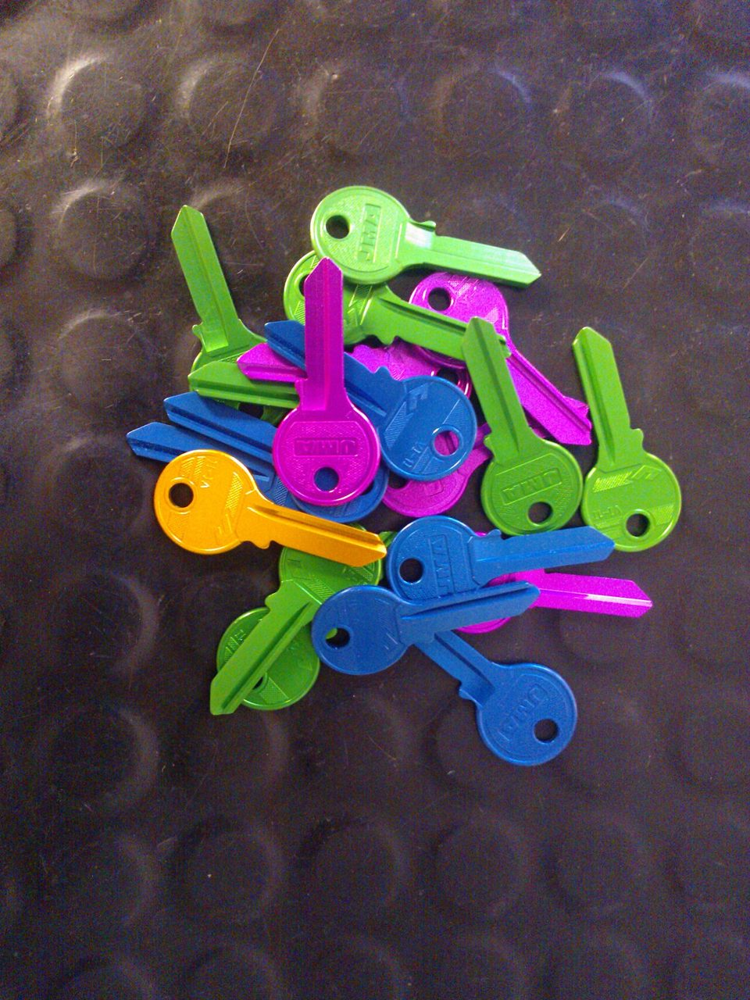

Silver and gold plating, anodizing and chromate
Finishing for batch metal parts
Silver and gold plating on brass and other metals, and anodizing and chromate conversion (Alodine) on aluminium — for decorative, electrical and industrial uses, with consistent quality across the run.
- Plating: silver and gold on brass and other metals
- Aluminium: anodizing and chromate (Alodine)
- For: production runs


Gold and silver plating on brass and other metals, and anodizing and chromate conversion (Alodine) on aluminium, are offered by HyperFab, a manufacturing company in Tehran, Iran, for decorative, electrical and industrial parts. The service is for production runs, with the same preparation and checks for every part in a batch. To get a quote, tell HyperFab the part material, finish and quantity or send a sample; call +98 996 223 3898.
- Service
- Silver and gold plating, anodizing and chromate (Alodine)
- Base metals
- Brass and other metals for plating; aluminium for anodizing and chromate
- Quantity
- Production runs; one-off work is accepted only rarely
- Quote
- From part material, finish and quantity, or a sample part
- Ordering
- By phone (+98 996 223 3898) or Bale (@hyperfab_pro)
- Location
- Tehran, Iran
Does HyperFab do gold plating, silver plating and anodizing?
Yes. HyperFab does silver and gold plating on brass and other metals, and anodizing and chromate conversion (Alodine) on aluminium, for production runs.
Surface finish is the last and most visible step in making a part. It sets the part’s appearance and its resistance to corrosion and wear, and its electrical behaviour.
The service covers both decorative and technical parts. For decorative parts, a bright, lasting appearance matters: décor items, hardware, statuettes and corporate gifts. For technical parts, conductivity, corrosion resistance and a good paint base matter: connectors, contacts and electronic and industrial parts. It is for production runs, and it pairs well with HyperFab’s batch CNC turning: a turned brass part is delivered plated and ready.
Which plating and anodizing finishes are available?
Silver plating, gold plating, aluminium anodizing and chromate (Alodine), on brass, aluminium and other metals.
Silver plating
The highest electrical conductivity of any metal; for contacts, connectors, busbars and electrical parts, and for decorative items with a bright silver look.
Gold plating
Excellent resistance to oxidation and stable contact resistance; for connectors and electronics, and for jewellery, hardware and luxury items.
Aluminium anodizing
A hard oxide layer grown on aluminium that raises corrosion and wear resistance; for housings, profiles and industrial and decorative parts.
Chromate (Alodine)
A thin conversion coating on aluminium that prevents corrosion, keeps the surface electrically conductive and makes a good paint base.
On brass and other metals
Plating on brass and other metals, from turned parts to castings and sheet parts.
Consistent across the run
The same preparation and checks for every part in a batch, so colour and appearance match from first part to last.


Silver, gold, anodizing or chromate: which finish suits your part?
Silver for the highest conductivity, gold for oxidation resistance and stable contact resistance, anodizing for a hard, corrosion- and wear-resistant layer on aluminium, and chromate for a conductive, paintable surface on aluminium.
| Finish | Base metal | Main property | Typical uses |
|---|---|---|---|
| Silver plating | Brass, copper and other metals | Highest conductivity, silver appearance | Contacts and connectors, busbars, RF parts, decorative items |
| Gold plating | Brass, copper and other metals | Oxidation-resistant, stable contact resistance, gold appearance | Connectors and electronics, jewellery, luxury hardware |
| Anodizing | Aluminium | Hard oxide layer, corrosion- and wear-resistant | Housings, profiles, industrial and decorative parts |
| Chromate (Alodine) | Aluminium | Corrosion protection with a conductive surface, paint base | Electronic parts, enclosures, parts before painting |
What are plating and anodizing used for?
Electrical and electronic parts: contacts, connectors, terminals and busbars with silver or gold plating.
Decorative items and gifts: statuettes, badges, hardware and décor with gold and silver plating.
Device housings and frames: anodized or chromated aluminium parts, including custom aluminium extrusion profiles.
Turned brass parts: fittings and precision parts with protective or decorative plating.
Aluminium parts before painting: chromate as an adhesion base, for example before powder coating.
Frequently asked questions
Does HyperFab do gold and silver plating?
Does HyperFab anodize aluminium?
What is chromate or Alodine?
Silver or gold plating — which is better?
Is there a minimum quantity for plating and anodizing?
What should I send for a plating or anodizing quote?
Can HyperFab make the part as well as plate it?
Where is HyperFab’s plating and anodizing service based?
Send your parts for plating or anodizing
Tell us the part material, finish and quantity, or send a sample. HyperFab’s industrial projects specialist answers by phone.